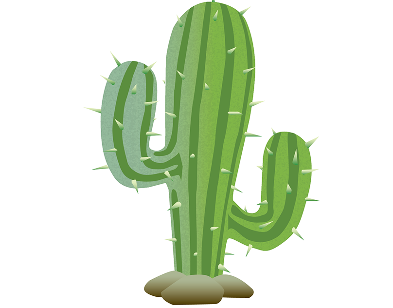
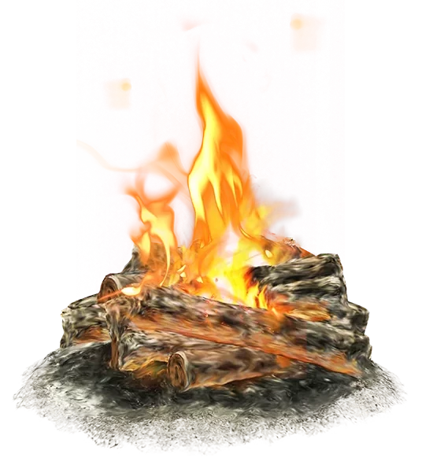

Ёжик Геннадий любит всё, что так или иначе связанно с яблоками. Например, он любит, вставая с утра, прогуляться по округе в поисках дикой яблоньки, на которой зреют кисленькие зелёные плоды, подойти к ней поближе, присесть под её раскидистые ветви и поднять голову, чтобы смотреть, как трепещущие от лёгкого ветерка листья щекочат зелёные мячики. Несомненно, он также любит их есть. Ёжик Геннадий на удивление оказался очень проворным зверьком — все, кто его видят, удивляются, как быстро он забирается на дерево, как ловко переползает с ветки на ветку в поисках очередного яблочка. В это время он похож на маленькую шаровую молнию, летающую вокруг дерева и испепеляющую зелёные или красные плоды. Зелёные яблоки ему нравятся больше: хоть они и чаще бывают кислыми, чем красные, зелёные всегда сочные и твёрдые, за что их так любит ёжик Геннадий.
Не меньше, чем яблоки, ёжик Геннадий любит всякие странные вещи. Например, его очень удивляют кактусы. С одной стороны они зелёные, а с другой — колючие. Ёжик Геннадий привык, что обычно колючий только он, а он не зелёный, но кактус — колючий и вместе с тем зелёный. Когда ёжик Геннадий впервые увидел кактус, у него промелькнула мысль: «это ёж, который съел так много зелёных яблок, что сам позеленел!» — однако присмотревшись, он понял, что «ёж» имеет слишком странную форму, чтобы быть ежом; тогда Геннадий подошёл, и удостоверился, что это совсем не его сородич, а невероятно странное растение, каких он раньше никогда не видел и вряд ли мог бы предположить, что подобное этому существует — одновременно и колючее и зелёное. В первые мгновения, стыдно признаться, ёжик Геннадий оскорбился: представьте себе! — всю свою жизнь вы думаете, что колючие только ежи (ёлки не в счёт, ведь иголки у них чрезвырайно мягкие и совсем не колючие), а тут вдруг оказывается, что растёт в далёких краях диковинное зелёно-колючие растение! как ёжик Геннадий обиделся на кактус! Впрочем, совсем скоро он пришёл в себя и рассудил так: «Если я колючий, то, встретив колючее растение, я должен радоваться и лелеять его, ведь оно больше всех остальных похоже на меня, а значит, всех мне роднее и ближе» — и тогда ёжик Геннадий полюбил кактус и стал ходить вокруг него, смотреть и запоминать.
Когда встречаешь в своём путешествии разные странные и оттого очень интересные вещи, разве может не возникнуть желание кому-нибудь о них рассказать? Ёжик Геннадий решительно вам ответит: «Нет, этого никак не может быть! обязательно захотите рассказать!» Останавливаясь на ночлег в берёзовой чаще или густой дубраве, ёжик старается найти поблизости кого-нибудь, кто хотел бы его послушать. Да и сам узнать новую историю о странных вещах ёжик Геннадий тот ещё любитель.
Однажды ёжик Геннадий встретил лиса. Как это было заведено, ёжик пригласил лиса к своему костру, предложив ему сесть на самое удобное бревно; лис оказался очень вежливым и отказался, сказав, что отнимать у хозяина костра самое лучшее место будет не очень вежливо, — и сел прямо на землю, подстелив под себя свой пушистый хвост. «Я очень люблю яблоки, — сказал ёжик Геннадий, как только костёр разгорелся и взвился искрами в небо от подброшенных веток, — а ты любишь?». На что лис ответил: «яблоко яблоку рознь». Удивился ёжик Геннадий такому странному ответу и задумался. «А кактусы? — после долгого размышления снова спросил он. Но лис, к сожалению, никогда не видел кактусов. Тогда ёжик Геннадий оживился и стал описывать ему диковинное зелёно-колючее растение из засушливого Безводья, где не бывает дождей целыми месяцами. Так он говорил: «Больше меня ростом раза в два, зелёный, как переспелое яблоко, и — представь себе — колючее, как я сам! У него две лапки, одна слева — повыше, другая справа — пониже; и обе торчком.» Ёжик Геннадий очень радовался, что познакомился с тем, кому мог поведать о необычном зелёно-колючем растении.